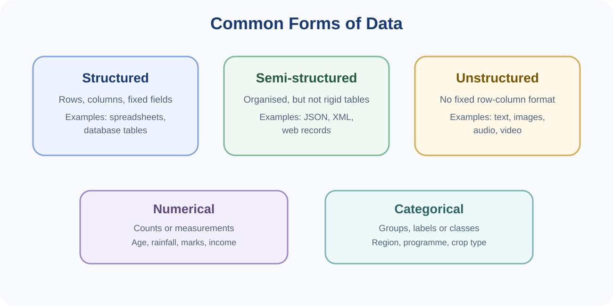
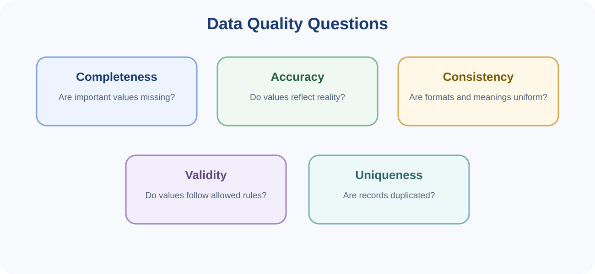
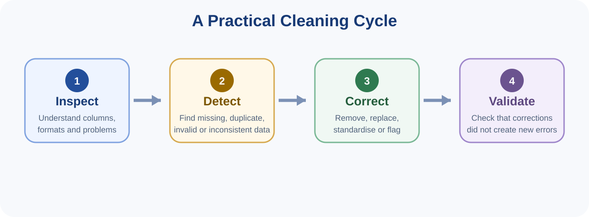
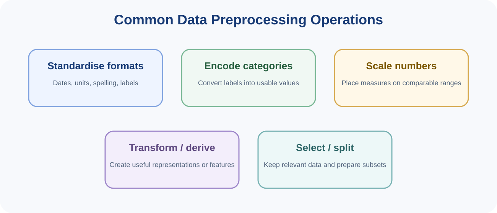

You can read these notes on screen or use the button below to print or save them as PDF.
Every Data Science project depends on data. Before collecting anything, the analyst should ask: What problem are we trying to solve? What data are relevant? Where can they be obtained? Who owns them? Are they trustworthy and appropriate for the intended use?
Data may come from many places. A useful beginner distinction is between primary data, collected directly for the current purpose, and secondary data, originally collected by another person or organisation and later reused.
| Source type | Meaning | Examples | Questions to ask |
|---|---|---|---|
| Primary | Collected specifically for the current study or task | Survey, interview, experiment, field observation, sensor deployed for the project | Was the collection method reliable? Is the sample appropriate? |
| Secondary | Existing data collected previously for another purpose | Government statistics, institutional records, published datasets, historical databases | Who created it? When? For what purpose? Are definitions compatible? |
| Internal | Generated inside an organisation | Student records, transactions, attendance, inventory | Who is allowed to access it? Are fields consistently recorded? |
| External | Obtained from outside an organisation | Weather data, census data, market prices, satellite data | Is the provider reliable? Are licences or usage restrictions involved? |
Modern data sources also include mobile devices, web applications, social media, remote sensing, Internet of Things sensors, digital transactions, images, text, audio, video and machine-generated logs.

Structured data follow a defined schema, often organised in rows and columns. Semi-structured data contain organisational markers but may not fit a rigid table. Unstructured data such as free text, images, audio and video do not naturally follow a row-column format.
Variables may also be described by the type of values they contain. Numerical data represent quantities or measurements. Categorical data represent groups or labels. Numerical data may be discrete or continuous, while categorical data may be nominal or ordinal.
Metadata are data that describe other data. A data dictionary, for example, may state each column name, definition, data type, unit, allowed values and whether the field can be missing. Good metadata make datasets easier to understand and reuse.
Raw data are rarely ready for analysis. Data cleaning is the process of identifying and correcting errors, inconsistencies and quality problems so that the dataset becomes more reliable and usable.


There is no single correct treatment for all missing data. Options include leaving a value missing, removing records or variables when justified, or estimating a replacement value through imputation. The decision depends on why the value is missing, how much data are missing and how the field will be used.
Duplicates should be identified using appropriate identifiers or combinations of fields. Two people can legitimately have the same name, so a repeated name alone is not proof of a duplicate. Conversely, the same record copied twice with the same unique student ID is stronger evidence.
An outlier should be investigated rather than automatically deleted. A test score of 103 when the maximum is 100 is invalid. A rainfall measurement much higher than usual may be a genuine extreme event. Context determines the correct response.
Cleaning should be reproducible. Keep the original data unchanged, record what was changed and why, and save a cleaned version separately. This protects the original evidence and makes the process auditable.
Preprocessing is the broader preparation of data into a form suitable for analysis or modelling. Cleaning is part of preprocessing, but preprocessing can also include transformation, encoding, scaling, integration, selection and creating new variables.

Dates may be written as 05/10/2026, 2026-10-05 or 5 October 2026. Measurements may use kilograms in one source and grams in another. Categories may differ only in capitalisation or spelling. Standardisation makes these representations consistent.
Many computational methods require categories to be represented numerically. A simple binary category may be represented with two values, while a category with several unordered labels is often represented using separate indicator variables. Encoding should preserve the meaning of the original categories and should not create a false order.
Variables can have very different ranges: age may range from 18 to 60, while annual income may range from thousands to millions. Some algorithms are sensitive to these scale differences. Scaling changes the numerical representation to make features more comparable while preserving the information needed for analysis.
Sometimes raw fields are converted into more useful representations. A date of birth can be used to derive age. A timestamp can be used to derive day of week. Multiple transaction records can be aggregated into monthly totals. Such transformations should be logically justified and documented.
More data are not always better if fields are irrelevant, unreliable or ethically inappropriate. Preprocessing may include selecting useful variables and observations. Later in the programme, students will learn formal feature-selection and dimensionality-reduction methods.
When data will be used for Machine Learning, the dataset is commonly divided into separate subsets for model development and evaluation. The exact procedures are studied later; at this stage, the key idea is that a model should not be evaluated only on the same examples from which it learned.